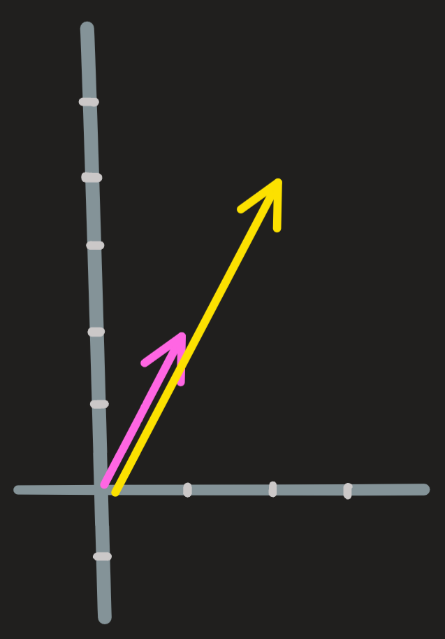

Linear dependence and independence
Exercise 1 (Motivation exercise) Solve 1.2 > 1 > c with \(w=(1,10,3,4)\) instead, then compute \(2u-3v+u\). The later gives the zero vector, what can you conclude?
First lets see what is linear (in)dependence, then how to check it. As we will see throughout the course there are many ways of doing it.
Linear (in)dependence is seen best with examples.
Example 1: Just consider two parallel vectors

One is just twice the other (i.e. proportional). They are dependent because you can create one from the other:
\[ \begin{pmatrix} 2\\4\end{pmatrix} = 2 \begin{pmatrix} 1\\2\end{pmatrix} \qquad\text{or}\qquad \begin{pmatrix} 1\\2\end{pmatrix} = \frac{1}{2} \begin{pmatrix} 2\\4\end{pmatrix} \]
Example 2: More difficult. Consider again the vectors \(\begin{pmatrix} 1\\2\end{pmatrix}\), \(\begin{pmatrix} 1\\0\end{pmatrix}\) and \(\begin{pmatrix} 0\\1\end{pmatrix}\). If you discard the first vector, nothing is lost because through the linear combination of the second and third vectors we can recover it. Here is how:
\[ \begin{pmatrix} 1\\0\end{pmatrix}+2\begin{pmatrix} 0\\1\end{pmatrix} = \begin{pmatrix} 1\\2\end{pmatrix} \]
In other words the first vector depends on the second and third vector through the linear combination above, it can be fully build from these pieces and thus it does not bring anything new.

What may not be so obvious is the fact that any vector from the three could be discarded, for example drop the second one! No problem the first and third vectors can construct it:
\[ \begin{pmatrix} 1\\2\end{pmatrix}-2\begin{pmatrix} 0\\1\end{pmatrix} = \begin{pmatrix} 1\\0\end{pmatrix} \]
From these examples we conclude that the following statements are equivalent:
- Vectors from a list are linearly independent if you cannot construct any one of them from the remaining ones. (they point in distinct directions):
- Vectors from a list are linearly independent when there exist scalars that combine them, yielding the zero vector. Otherwise they are dependent;
There two statements in English translates to Mathematical language:
Definition 1 [\(\mathbf{u},\mathbf{v},\mathbf{w}\) are independent] := [the only solution of \(\alpha \mathbf{u} +\beta \mathbf{v} + \gamma \mathbf{w} = \mathbf{0}\) is \(\alpha=\beta=\gamma=0\)]
[\(\mathbf{u},\mathbf{v},\mathbf{w}\) are dependent] := [there are solutions of \(\alpha \mathbf{u} +\beta \mathbf{v} + \gamma \mathbf{w} = \mathbf{0}\) where \(\alpha,\beta,\gamma\) need not be \(0\)]
[\(\mathbf{w}\) is dependent on \(\mathbf{u}\) and \(\mathbf{v}\)] := [\(\mathbf{w} = \alpha \mathbf{u} + \beta\mathbf{w}\) for some \(\alpha,\beta\)] = [\(\mathbf{w} \in span\{\mathbf{u},\mathbf{v}\}\)]
What the dependence definition is really telling us, is that there is at least one vector that can be written in terms of the others. And that “writing in terms of the others” is accomplished just by rearranging \(\alpha \mathbf{u} +\beta \mathbf{v} + \gamma \mathbf{w} = \mathbf{0}\).
For example, if \(\mathbf{u} +2\mathbf{v} - \mathbf{w} = \mathbf{0}\), then isolating \(\mathbf{w}\) we obtain \(\mathbf{w}=\mathbf{u} + 2\mathbf{v}\), telling \(\mathbf{w}\) depends on \(\mathbf{u}\) and \(\mathbf{v}\); similarly isolating \(\mathbf{u}\) or \(\mathbf{v}\) tells us they are also dependent on the remaining. Geometrically the vectors lie in the same plane. (see example 2)
In a later section we’ll see the definition above is in fact solving \(A\bf{x}=\bf{0}\). To check whether one vector is dependent or not on other vectors is a matter of whether \(A\mathbf{x}=\mathbf{b}\) has or not a solution.
How to check whether a set of vectors is or not independent?
Consider again example 2 above. We were given the vectors: \(\begin{pmatrix} 1\\2\end{pmatrix}\) , \(\begin{pmatrix} 1\\0\end{pmatrix}\) and \(\begin{pmatrix} 0\\1\end{pmatrix}\) . Are they dependent or independent?
In other words, using the definition: what is the solution \(\alpha\), \(\beta\), \(\gamma\) of the equation:
\[ \alpha \begin{pmatrix} 1\\2\end{pmatrix} +\beta \begin{pmatrix} 1\\0\end{pmatrix}+\gamma\begin{pmatrix} 0\\1\end{pmatrix}=\begin{pmatrix} 0\\0\end{pmatrix} \]
Well, rewriting it, we obtain a system of equations to solve:
\[ \begin{cases} \alpha + \beta =0\\ 2\alpha +\gamma =0 \end{cases} \implies \begin{cases} \alpha = \beta =0\\ \alpha =\gamma/2 =0 \end{cases} \]
There are solutions for this system, for example \(\gamma=2\), \(\alpha=1\) and \(\beta= -1\). This shows some of the three vectors can be constructed from the remaining.
When the number of vectors in \(\mathbb{R}^n\) being spanned is larger than the dimension \(n\) of the space, then some are dependent vectors. In the example above, \(n=2\) and there are \(3\) vectors being spanned.
Exercise 2 Solve 1.2 > 5 > (d)
How to check whether a vector depends on two other vectors?
Is \(\begin{pmatrix} 1\\2\end{pmatrix}\) dependent on \(\begin{pmatrix} 1\\0\end{pmatrix}\) and \(\begin{pmatrix} 0\\1\end{pmatrix}\) ? In other words, is it true or false that \(\begin{pmatrix} 1\\2\end{pmatrix} \in span \{\begin{pmatrix} 1\\0\end{pmatrix},\begin{pmatrix} 0\\1\end{pmatrix}\}\)
Using the definition above we seek for solutions of
\[ \begin{pmatrix} 1\\2\end{pmatrix}=\beta\begin{pmatrix} 1\\0\end{pmatrix}+\gamma\begin{pmatrix} 0\\1\end{pmatrix} \]
(we set \(\alpha=-1\))
The solutions are obtained by solving the system:
\[ \begin{cases} 1=\beta\\ 2=\gamma \end{cases} \]
which is immediate! So yes, the vector is dependent.
Exercise 3 Solve 1.2 > 3 > (b), (c);